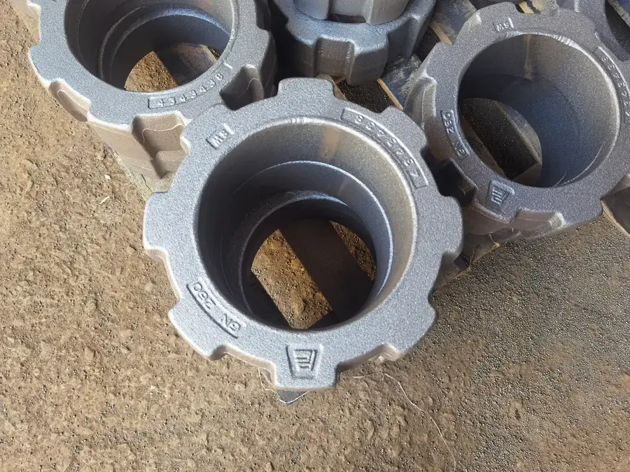
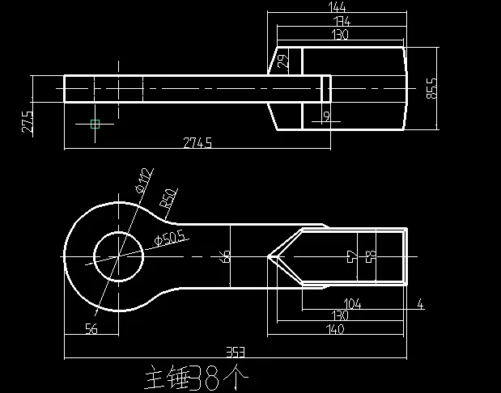
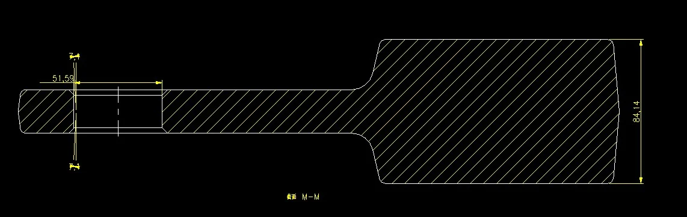
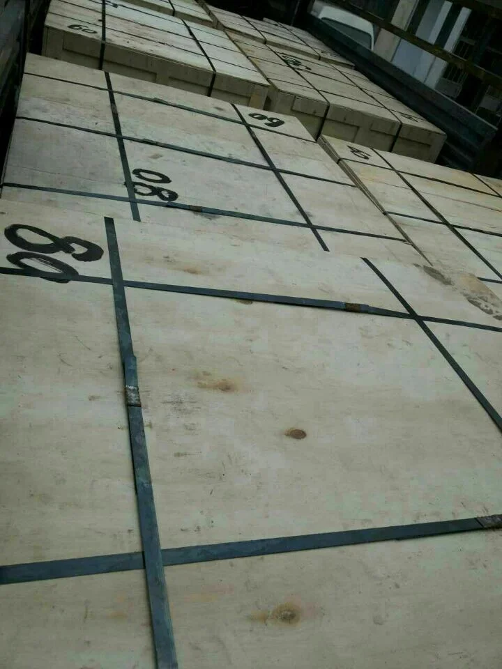
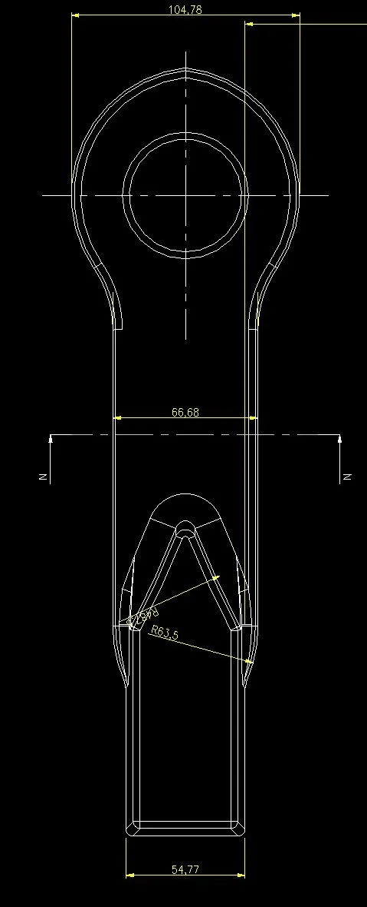
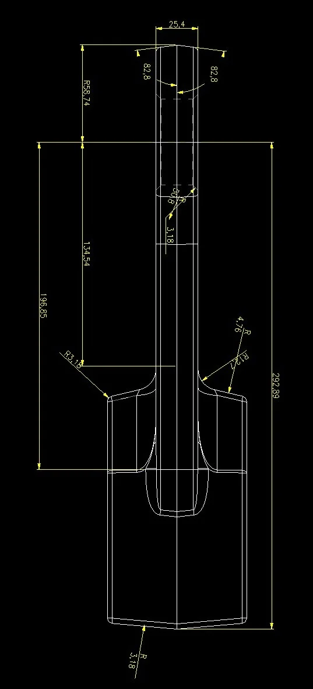

Грануляторы TKK
Typical Applications
Галерея производства — Цех Anranst












Грануляторы TKK — Модели
| Модели | Детали |
|---|---|
| Модели | TKK series |
| Производительность | 100-1,500 tph |
| Размер питания | Up to 200mm |
| Размер продукта | 10-50mm |
| Скорость ротора | 600-1,200 rpm |
Совместимые модели (каталог OEM)
| Стадия дробления | Secondary |
Список запчастей OEM
| Запчасть | Номер | Материал (Китай) |
|---|---|---|
| Ring Hammer | GN260 | |
| Paddle Hammer |
Детали
Молотки: Mn сталь с опцией TiC. Колосники: Cr-Mo сталь или Ni-Hard. Футеровки: Mn сталь.
Грануляторы TKK Детали
Модели
Various
Детали
Молотки, колосники
Кольцевой молот (дробилка TKK)
Высокоскоростные кольцевые молотки TKK 26-72; обратимая конструкция удваивает срок службы
| Grade | C | Si | Mn | Cr | Mo | Ni |
|---|---|---|---|---|---|---|
| AISI 4150H | 0.47-0.54 | 0.15-0.35 | 0.65-1.10 | 0.75-1.20 | 0.15-0.25 | — |
Кованая структура с превосходной усталостной стойкостью; для высокоскоростных молотковых дробилок
| Grade | C | Si | Mn | Cr | Mo | Ni |
|---|---|---|---|---|---|---|
| Mn13Cr2 | 1.05-1.20 | ≤1.0 | 11.5-14.0 | 1.5-2.5 | — | — |
Отличная способность к наклёпу; поверхностная твёрдость повышается под ударной нагрузкой
Лопастной молот / качающийся молот
Альтернативный тип молотка для TKK; лопастной профиль для повышенной производительности
| Grade | C | Si | Mn | Cr | Mo | Ni |
|---|---|---|---|---|---|---|
| AISI 4150H | 0.47-0.54 | 0.15-0.35 | 0.65-1.10 | 0.75-1.20 | 0.15-0.25 | — |
Кованая структура с превосходной усталостной стойкостью; для высокоскоростных молотковых дробилок
| Grade | C | Si | Mn | Cr | Mo | Ni |
|---|---|---|---|---|---|---|
| Mn13Cr2 | 1.05-1.20 | ≤1.0 | 11.5-14.0 | 1.5-2.5 | — | — |
Отличная способность к наклёпу; поверхностная твёрдость повышается под ударной нагрузкой
Колосник / сито
Колосники TKK; контролируют размер продукта, выдерживая удар кольцевых молотов
| Grade | C | Si | Mn | Cr |
|---|---|---|---|---|
| Mn13Cr2 | 1.05-1.35 | ≤1.0 | 11.0-14.0 | 1.5-2.5 |
Стандартная наклёпываемая сталь; экономичный выбор для умеренных нагрузок
| Grade | C | Si | Mn | Cr |
|---|---|---|---|---|
| Mn18Cr2 | 1.05-1.35 | ≤1.0 | 16.0-19.0 | 1.5-2.5 |
Улучшенный наклёп; на 20-30% дольше Mn13 при высоком сжатии
Футеровочная плита
Внутренняя футеровка TKK для защиты корпуса
| Grade | C | Si | Mn | Cr |
|---|---|---|---|---|
| Mn13Cr2 | 1.05-1.35 | ≤1.0 | 11.0-14.0 | 1.5-2.5 |
Стандартная наклёпываемая сталь; экономичный выбор для умеренных нагрузок
Почему Anranst
- Кованые кольцевые молотки AISI 4150H для TKK 26-72; превосходная усталостная стойкость при 700-1000 об/мин
- Реверсивная конструкция удваивает срок службы; точная балансировка
- Полное покрытие TKK: 26x30-48x72